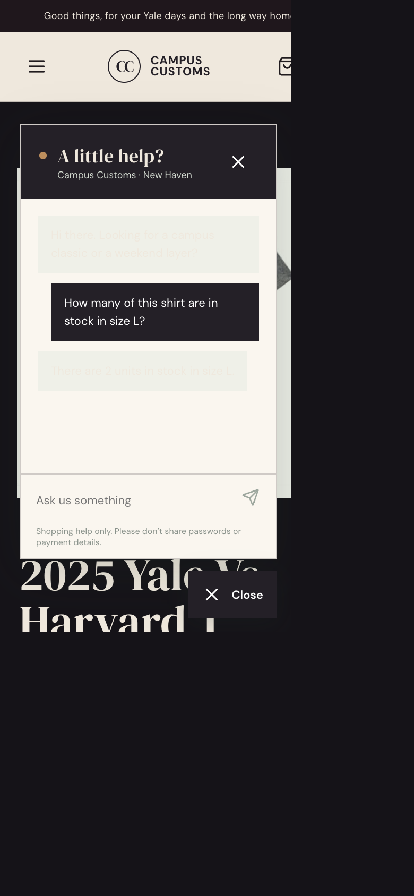
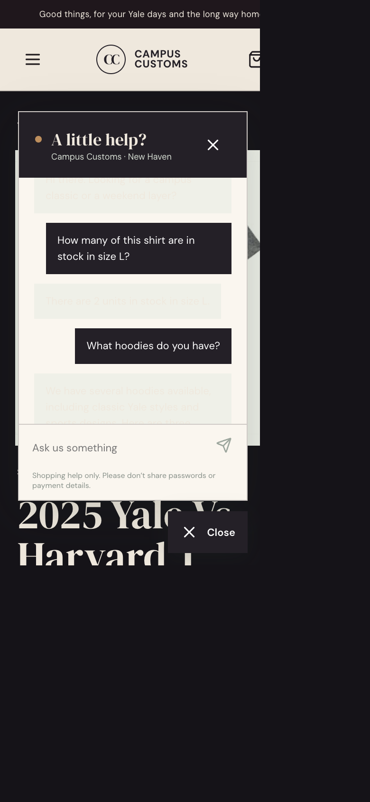
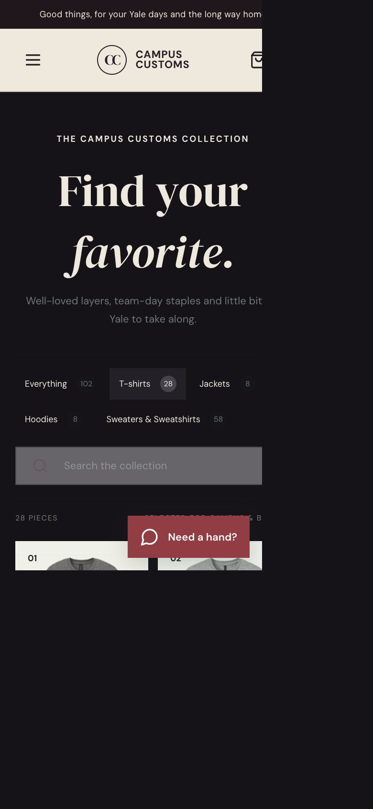

Evidence captured from the running storefront and API. Each screenshot documents one requested shopper workflow.
1. Chat checks inventory by size

The shopper asks how many of the current shirt are available in size L. The chat answers 2 units in stock; the database inventory row for this product and size also records quantity 2.
2. Category question returns product cards

Asking “What hoodies do you have?” returns three dynamically selected, database-hydrated product cards beneath the assistant reply. Each card shows product imagery, name, and price and links to that item’s product detail page.
3. Updated product category filters

The collection uses the simplified clothing categories. Selecting T-shirts filters the catalogue to matching items and updates the result count; the remaining category controls stay available above the cards.